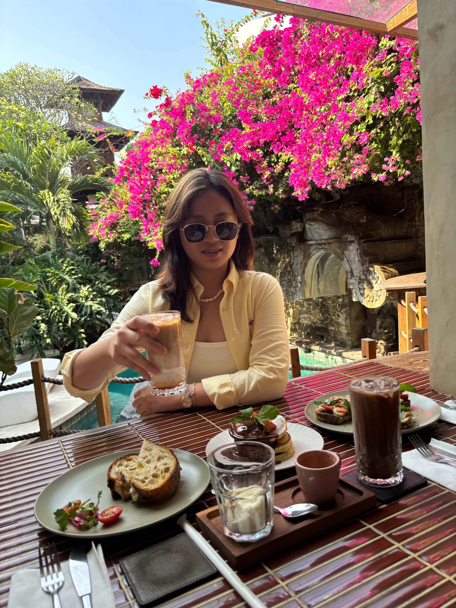

Video Editing for Social Media
Editing short-form videos and promotional content using pacing, transitions, captions, and storytelling to make videos more engaging.
MULTIMEDIA STUDIES STUDENT & CREATIVE EDITOR
I turn ideas into engaging digital stories through video editing, photography, and content creation.
Get to know meA LITTLE INTRODUCTION

I am a Multimedia Studies student who enjoys video editing, photography, and creating digital content. I currently work as a video editor and social media manager for an international client.
I am passionate about turning ideas into meaningful visual stories. Through my work, I continue to improve my creative skills, explore new techniques, and discover different ways to communicate through digital media.
One of my biggest motivations is to help my family and create opportunities for myself to travel, experience new things, and enjoy the things I once dreamed of having.
WHAT I ENJOY
Creating stories through visuals, pacing, and sound.
Capturing moments and expressing ideas through images.
Developing creative and engaging digital content.
Discovering new places and experiencing different cultures.
Trying different food and enjoying good meals.
Finding inspiration in films and everyday experiences.
MY CREATIVE SIDE
Editing short-form videos and promotional content using pacing, transitions, captions, and storytelling to make videos more engaging.
Exploring photography and using visual composition to capture moments and communicate ideas through images.
Creating and organizing social media content to help brands communicate with their audiences through engaging digital posts and videos.
LET'S CONNECT
I'd love to connect and hear from you!
Email Me